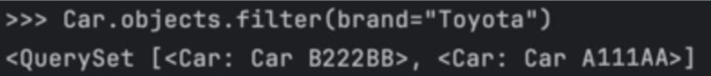
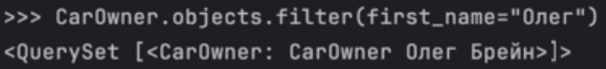
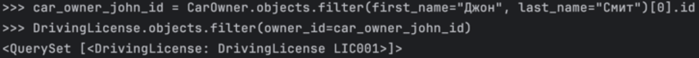
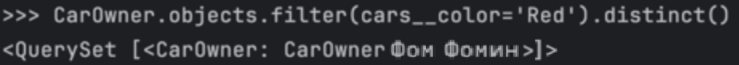
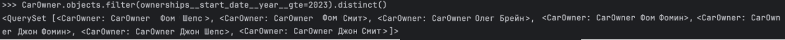
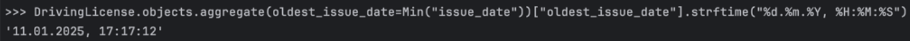
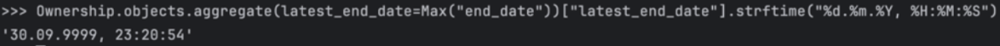
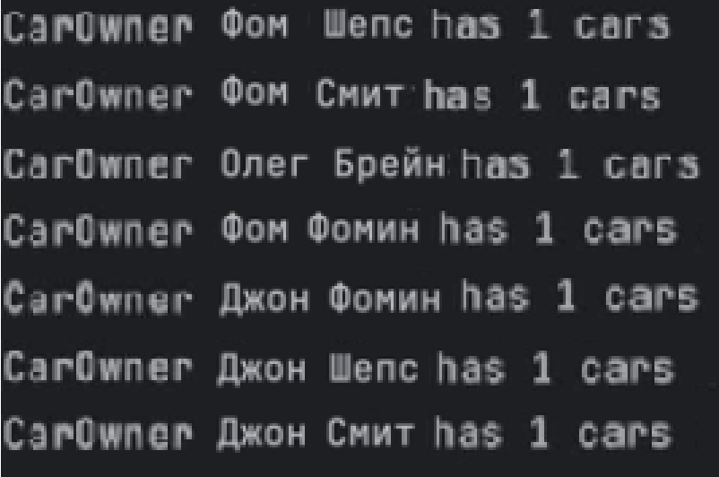
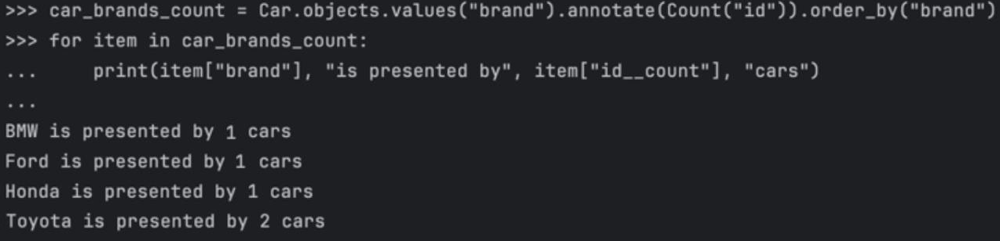
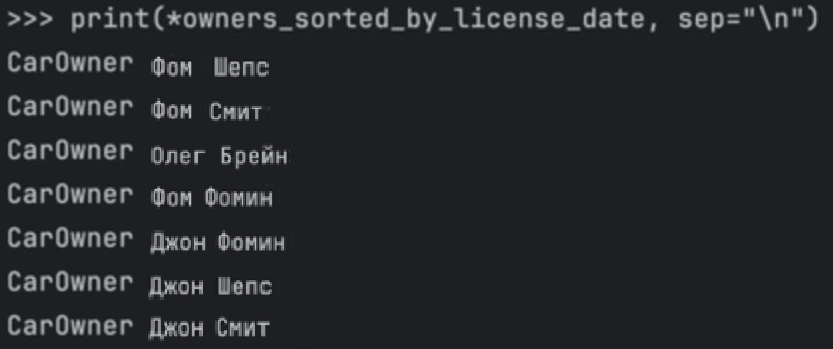

Практическое задание 3.1. Django Web framework. Запросы и их выполнение.
Задание 1
Условие:
Напишите запрос на создание 6-7 новых автовладельцев и 5-6 автомобилей, каждому автовладельцу назначьте удостоверение и от 1 до 3 автомобилей. Задание можете выполнить либо в интерактивном режиме интерпретатора, либо в отдельном python-файле. Результатом должны стать запросы и отображение созданных объектов.
Код (для автовладельцев):
from project_first_app.models import Car, CarOwner, Ownership, DrivingLicense
from django.utils import timezone
own1 = CarOwner.objects.create(last_name="Шепс", first_name="Фом", birth_date=timezone.now())
own2 = CarOwner.objects.create(last_name="Смит", first_name="Фом", birth_date=timezone.now())
own3 = CarOwner.objects.create(last_name="Брейн", first_name="Олег", birth_date=timezone.now())
own4 = CarOwner.objects.create(last_name="Фомин", first_name="Фом", birth_date=timezone.now())
own5 = CarOwner.objects.create(last_name="Фомин", first_name="Джон", birth_date=timezone.now())
own6 = CarOwner.objects.create(last_name="Шепс", first_name="Джон", birth_date=timezone.now())
own7 = CarOwner.objects.create(last_name="Смит", first_name="Джон", birth_date=timezone.now())
Код (для автомобилей):
car1 = Car.objects.create(registration_number="A111AA", brand="Toyota", model="Camry", color="White")
car2 = Car.objects.create(registration_number="B222BB", brand="Toyota", model="Camry", color="Black")
car3 = Car.objects.create(registration_number="C333CC", brand="Honda", model="Civic", color="Blue")
car4 = Car.objects.create(registration_number="D444DD", brand="Ford", model="Focus", color="Red")
car5 = Car.objects.create(registration_number="E555EE", brand="BMW", model="M3", color="Silver")
Код (связь автомобилей и автовладельцев):
Ownership.objects.create(owner=own1, car=car1, start_date=timezone.now())
Ownership.objects.create(owner=own2, car=car2, start_date=timezone.now())
Ownership.objects.create(owner=own3, car=car3, start_date=timezone.now())
Ownership.objects.create(owner=own4, car=car1, start_date=timezone.now())
Ownership.objects.create(owner=own5, car=car2, start_date=timezone.now())
Ownership.objects.create(owner=own6, car=car3, start_date=timezone.now())
Ownership.objects.create(owner=own7, car=car4, start_date=timezone.now())
Код (для лицензий):
DrivingLicense.objects.create(owner=owner1, license_number="LIC001", type="A", issue_date=timezone.now())
DrivingLicense.objects.create(owner=owner2, license_number="LIC002", type="A", issue_date=timezone.now())
DrivingLicense.objects.create(owner=owner3, license_number="LIC003", type="A", issue_date=timezone.now())
DrivingLicense.objects.create(owner=owner4, license_number="LIC004", type="A", issue_date=timezone.now())
DrivingLicense.objects.create(owner=owner5, license_number="LIC005", type="A", issue_date=timezone.now())
DrivingLicense.objects.create(owner=owner6, license_number="LIC006", type="A", issue_date=timezone.now())
DrivingLicense.objects.create(owner=owner7, license_number="LIC007", type="A", issue_date=timezone.now())
Задание 2
Условие:
Где это необходимо, добавьте related_name к полям модели 1. Выведете все машины марки “Toyota” (или любой другой марки, которая у вас есть) 2. Найти всех водителей с именем “Олег” (или любым другим именем на ваше усмотрение) 3. Взяв любого случайного владельца получить его id, и по этому id получить экземпляр удостоверения в виде объекта модели (можно в 2 запроса) 4. Вывести всех владельцев красных машин (или любого другого цвета, который у вас присутствует) 5. Найти всех владельцев, чей год владения машиной начинается с 2010 (или любой другой год, который присутствует у вас в базе)
Где это необходимо, добавьте related_name к полям модели
from django.contrib.auth.models import AbstractUser
from django.db import models
class Car(models.Model):
registration_number = models.CharField(max_length=15)
brand = models.CharField(max_length=20)
model = models.CharField(max_length=20)
color = models.CharField(max_length=30)
def __str__(self):
return f"Car {self.registration_number}"
class CarOwner(models.Model):
last_name = models.CharField(max_length=30)
first_name = models.CharField(max_length=30)
birth_date = models.DateTimeField()
cars = models.ManyToManyField(
Car,
through="Ownership",
through_fields=("owner", "car"),
related_name="owners"
)
def __str__(self):
return f"Car {self.first_name} {self.last_name}"
class Ownership(models.Model):
owner = models.ForeignKey(CarOwner, on_delete=models.CASCADE, related_name="ownerships", null=True)
car = models.ForeignKey(Car, on_delete=models.CASCADE, related_name="ownerships", null=True)
start_date = models.DateTimeField()
end_date = models.DateTimeField(null=True)
def __str__(self):
return f"Ownership {self.car} of {self.owner}"
class DrivingLicense(models.Model):
owner = models.ForeignKey(CarOwner, on_delete=models.CASCADE, related_name="licenses")
license_number = models.CharField(max_length=10)
type = models.CharField(max_length=10)
issue_date = models.DateTimeField()
def __str__(self):
return f"DrivingLicense {self.license_number}"
class CustomUser(AbstractUser):
passport_number = models.CharField(max_length=20)
home_address = models.CharField(max_length=100)
nationality = models.CharField(max_length=30)
1. Выведете все машины марки “Toyota”
Car.objects.filter(brand="Toyota")

2. Найти всех водителей с именем “Олег”
CarOwner.objects.filter(first_name="Олег")

3. Взяв любого случайного владельца получить его id, и по этому id получить экземпляр удостоверения в виде объекта модели (можно в 2 запроса)
car_owner_john_id = CarOwner.objects.filter(first_name="Джон", last_name="Смит")[0].id
DrivingLicense.objects.filter(owner_id=car_owner_john_id)

4. Вывести всех владельцев красных машин
CarOwner.objects.filter(cars__color='Red').distinct()

5. Найти всех владельцев, чей год владения машиной начинается с 2022
CarOwner.objects.filter(ownerships__start_date__year__gte=2023).distinct()

Задание 3
Условие:
Необходимо реализовать следующие запросы c применением описанных методов: 1. Вывод даты выдачи самого старшего водительского удостоверения 2. Укажите самую позднюю дату владения машиной, имеющую какую-то из существующих моделей в вашей базе 3. Выведите количество машин для каждого водителя 4. Подсчитайте количество машин каждой марки 5. Отсортируйте всех автовладельцев по дате выдачи удостоверения
1. Вывод даты выдачи самого старшего водительского удостоверения
DrivingLicense.objects.aggregate(oldest_issue_date=Min("issue_date"))["oldest_issue_date"].strftime("%d.%m.%Y, %H:%M:%S")

2. Укажите самую позднюю дату владения машиной, имеющую какую-то из существующих моделей в вашей базе
Ownership.objects.aggregate(latest_end_date=Max("end_date"))["latest_end_date"].strftime("%d.%m.%Y, %H:%M:%S")

3. Выведите количество машин для каждого водителя
CarOwner.objects.annotate(num_cars=Count('cars')).values('id', 'num_cars')

4. Подсчитайте количество машин каждой марки
car_brands_count = Car.objects.values("brand").annotate(Count("id")).order_by("brand")
for item in car_brands_count:
print(item["brand"], "is presented by", item["id__count"], "cars")

5. Отсортируйте всех автовладельцев по дате выдачи удостоверения
owners_sorted_by_license_date = CarOwner.objects.filter(
licenses__isnull=False
).annotate(
earliest_license_date=Min("licenses__issue_date")
).order_by(
"earliest_license_date"
)
print(*owners_sorted_by_license_date, sep="\n")
